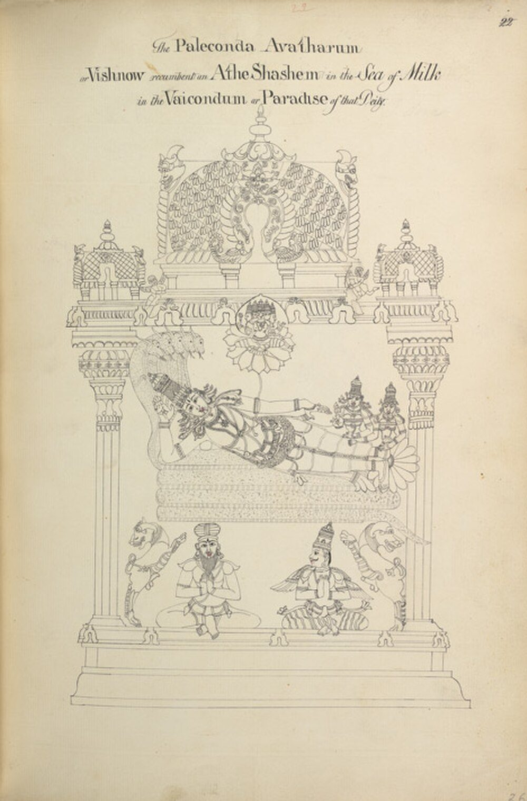

Chapter 2: Cosmos and Time: Vedic, Philosophical and Purāṇic Views¶
iyaṃ visṛṣṭir yata ābabhūva yadi vā dadhe yadi vā na
yo asyādhyakṣaḥ parame vyoman so aṅga veda yadi vā na veda
This creation — from where it came into being, whether it was made or whether it was not — he who oversees it in the highest heaven, he surely knows. Or perhaps he does not know.
— Ṛgveda 10.129.7
2.1 Many Cosmologies, Not One¶
It is common to speak of “the Hindu cosmology” as if there were a single picture of the universe shared by all Hindus. There was not. Over some three thousand years, Sanskrit and vernacular texts produced several distinct accounts of how the world came to be, how it is arranged and how long it lasts. The Vedic hymns offer speculative and often openly questioning cosmogonies. The Upaniṣads seek the single principle behind the world. The Sāṃkhya philosophers analysed the world into a fixed set of principles evolving from primordial matter. The Purāṇas assembled an encyclopaedic cosmography of continents, oceans, heavens and underworlds measured in precise numbers. The astronomers (jyotiṣī), working with a spherical Earth and planetary models, used some Purāṇic time periods for computation while quietly or openly disagreeing with much of Purāṇic geography.
These accounts coexisted, and later writers often harmonised them, but their purposes differed. This chapter describes them in turn and then considers how they can, and cannot, be compared with modern cosmology. The Purāṇas themselves are discussed in Volume 7, astronomy in Volume 12, and the geography of the Purāṇas in Volume 21; here the aim is to bring the pieces together for comparison with the Buddhist and Jain cosmologies of the next chapter.
2.2 Vedic Cosmogonies¶
The Ṛgveda (core c. 1500–1200 BCE) contains no single creation story. Several late hymns of its tenth book offer different images, and they are best read as poetic and ritual speculation rather than as doctrine (Jamison and Brereton 2014).
The Nāsadīya hymn (10.129).
The “hymn of non-being” begins with a state in which “there was neither non-existence nor existence”, no air and no sky, and asks what was covered and by what. Desire (kāma) arose as “the first seed of mind”; the poets, “searching in their hearts with insight”, found the connection of the existent in the non-existent. The hymn ends, in the verse quoted at the head of this chapter, by asking whether even the overseer in the highest heaven knows how creation arose. Its questioning tone has made it the most quoted Vedic text in modern discussions of cosmology. It should be read as a meditation on the limits of knowledge, not as a theory.
Hiraṇyagarbha (10.121).
A hymn with the refrain “to what god shall we offer oblation?” praises the “golden embryo” that arose in the beginning, became the one lord of what had come into being, and supported earth and sky. Later tradition identified this figure with Prajāpati.
The Puruṣa hymn (10.90).
Creation is described as a sacrifice performed by the gods with the cosmic Person (puruṣa) as victim. From his parts came the sky, earth, sun and moon, the animals, the metres and the hymns, and — in one of the earliest references to the four social classes — the Brahmin from his mouth, the Rājanya from his arms, the Vaiśya from his thighs and the Śūdra from his feet (10.90.12). The hymn is generally regarded as one of the latest in the collection. Its verse on the four classes was cited for millennia to give the social hierarchy cosmic sanction, and it was cited just as often by critics of caste, from the Buddha’s dialogues to Ambedkar (Chapter 5).
Brāhmaṇas and Upaniṣads.
The prose Brāhmaṇas tell many stories of Prajāpati creating the worlds through heat (tapas) and desire, and of a golden egg from which the world was born. The Upaniṣads reformulate these narratives as inquiries into the one principle behind the world. In the Bṛhadāraṇyaka (1.4) the world is created by a self (ātman) that was alone in the beginning; in the Chāndogya (6.2), Uddālaka teaches that in the beginning there was “being alone, one only, without a second”, which multiplied itself into heat, water and food; in another passage of the same text (3.19) the world is an egg that splits into the earth and sky (Olivelle 1998). These are not mutually consistent accounts. What they share is the conviction that the many came from a one.
2.3 Sāṃkhya: The Unfolding of Matter¶
The most systematic early analysis of the world is that of the Sāṃkhya school, whose classical text is Īśvarakṛṣṇa’s Sāṃkhyakārikā (perhaps 4th–5th century CE). Sāṃkhya distinguishes two eternal and independent principles: a plurality of conscious selves (puruṣa), which are pure witnesses and do nothing, and a single primordial matter (prakṛti or pradhāna), which is unconscious and consists of three constituents (guṇa): sattva (lightness, clarity), rajas (activity) and tamas (heaviness, inertia). When the balance of the guṇas is disturbed by the proximity of the selves, matter unfolds into twenty-three evolutes. Counting puruṣa and prakṛti, the system has twenty-five principles (tattva), set out in Table 2.1.
| No. | Principle | Description |
|---|---|---|
| 1 | puruṣa | conscious self; many in number; inactive witness |
| 2 | prakṛti (avyakta) | unmanifest primordial matter, the three guṇas in balance |
| 3 | buddhi (mahat) | intellect, the faculty of judgement; first evolute |
| 4 | ahaṃkāra | the “I-maker”, principle of individuation |
| 5 | manas | mind, coordinating the senses |
| 6–10 | five buddhīndriyas | capacities of hearing, touch, sight, taste, smell |
| 11–15 | five karmendriyas | capacities of speech, grasping, walking, excretion, generation |
| 16–20 | five tanmātras | subtle elements: sound, touch, form, taste, smell |
| 21–25 | five mahābhūtas | gross elements: space, air, fire, water, earth |
Three features of this scheme are important for comparison. First, the unfolding is not a history of the physical universe in time but an analysis of the conditions of experience: the intellect, the sense of self and the senses come before the gross elements because they are logically prior in the structure of experience. Modern writers who call Sāṃkhya “a theory of cosmic evolution” in the Darwinian or astrophysical sense mistake its purpose. Second, classical Sāṃkhya has no creator god; the theistic Yoga of Patañjali adds a special self, īśvara, who is not a creator. Third, the Sāṃkhya scheme was adopted, with modifications, by almost every later Hindu cosmology: by the Purāṇas, which make the evolutes the stages of creation by a personal deity, by Vedānta, which makes prakṛti dependent on Brahman, and by the Śaiva and Śākta traditions, which add eleven higher principles to make thirty-six (Volume 6). The schools and their arguments are treated in Volume 3 (Larson 1979).
2.4 Śaiva and Śākta Cosmologies¶
The tantric traditions of the second half of the first millennium CE built new cosmologies on the Sāṃkhya foundation. Śaiva theologians, both the dualist Śaiva Siddhānta and the non-dualist traditions of Kashmir, added eleven principles above the Sāṃkhya puruṣa to make a scheme of thirty-six tattvas. At the summit are the pure principles — Śiva, his power (śakti), and the states called Sadāśiva, Īśvara and pure knowledge (śuddhavidyā) — in which the divine consciousness is aware of itself and of the universe as one with itself. Below them is māyā, which gives rise to five “coverings” (kañcuka) that limit the infinite consciousness and make it into an individual: limited agency (kalā), limited knowledge (vidyā), attachment (rāga), time (kāla) and causal restriction (niyati). Only then come puruṣa, prakṛti and the twenty-three Sāṃkhya evolutes. In the non-dual Śaivism of Abhinavagupta (c. 950–1016), the whole series is the self-contraction of a single divine consciousness that freely manifests the world and freely recognises itself in it.
The scheme reverses the direction of classical Sāṃkhya: what Sāṃkhya treated as the unfolding of unconscious matter in the presence of passive selves became, in Śaiva hands, the self-limitation of an active divine consciousness. Śaiva Siddhānta, by contrast, held that God (pati), bound souls (paśu) and the bonds that bind them (pāśa) are three eternal realities, and that God acts through the cosmos for the liberation of souls. Śākta texts, from the Devīmāhātmya (c. 5th–6th century) onward, made the Goddess the supreme power from whom creation proceeds and to whom the male gods owe their strength. These cosmologies, and the ritual and yogic practices built on them, are the subject of Volume 6.
2.5 The Purāṇic Universe¶
2.5.1 The Purāṇas as sources¶
The Purāṇas are a large and fluid genre of Sanskrit texts composed and recomposed over many centuries, roughly from the middle of the first millennium CE to the second millennium. A definition found in several of them says that a Purāṇa has “five characteristics” (pañcalakṣaṇa): creation (sarga), re-creation after dissolution (pratisarga), genealogies of gods and sages (vaṃśa), the periods of the Manus (manvantara) and the histories of royal lineages (vaṃśānucarita). As Ludo Rocher showed, few surviving Purāṇas actually confine themselves to these topics, and many give them little space (Rocher 1986). The cosmological sections, however, are extensive, especially in the Viṣṇu, Vāyu, Brahmāṇḍa, Matsya and Bhāgavata Purāṇas, and they share a common framework with many local variations. Willibald Kirfel’s comparative study of Indian cosmography, though more than a century old, remains the fullest collation of these accounts (Kirfel 1920).
The tradition recognises eighteen “great” Purāṇas (mahāpurāṇa), though the lists in different texts do not agree exactly, and a larger number of “secondary” Purāṇas (upapurāṇa), as well as countless local texts glorifying particular shrines and regions (māhātmya, sthalapurāṇa). Table 2.2 gives the most common list. A later classification, found in the Padma Purāṇa, divides them into groups of six according to the three guṇas, associating the “pure” ones with Viṣṇu and the others with Brahmā and Śiva — a classification that itself reflects the sectarian rivalries of the period in which it was made (Rocher 1986).
| Purāṇa | Principal orientation and notes |
|---|---|
| Brahma | partly Vaiṣṇava; much material on Orissan pilgrimage sites |
| Padma | Vaiṣṇava; very large and composite |
| Viṣṇu | Vaiṣṇava; the clearest exposition of the classical cosmology |
| Śiva (or Vāyu) | Śaiva; lists differ over which of the two is included |
| Bhāgavata | Vaiṣṇava; devotion to Kṛṣṇa; enormously influential |
| Nārada (Nāradīya) | Vaiṣṇava; encyclopaedic |
| Mārkaṇḍeya | contains the Devīmāhātmya, central to goddess worship |
| Agni | encyclopaedic; ritual, medicine, poetics and other subjects |
| Bhaviṣya | composite, with late material on the future ages |
| Brahmavaivarta | Vaiṣṇava; devotion to Rādhā and Kṛṣṇa; late in its present form |
| Liṅga | Śaiva |
| Varāha | Vaiṣṇava |
| Skanda | Śaiva; the largest, containing many regional pilgrimage texts |
| Vāmana | mixed |
| Kūrma | Vaiṣṇava frame with much Śaiva material |
| Matsya | cosmology, genealogy, iconography and architecture |
| Garuḍa | Vaiṣṇava; includes an account of death and the after-life |
| Brahmāṇḍa | cosmology and genealogy; includes the Lalitāsahasranāma |
2.5.2 Creation and the cosmic egg¶
In the typical Purāṇic account, a supreme deity — Viṣṇu in the Vaiṣṇava Purāṇas, Śiva in the Śaiva ones — presides over primordial matter. The Sāṃkhya evolutes arise, combine and form a golden egg (brahmāṇḍa), within which the creator Brahmā is born and fashions the worlds. In the Vaiṣṇava version, Viṣṇu sleeps on the serpent Śeṣa (Ananta) on the waters of dissolution; a lotus grows from his navel, and on it sits Brahmā (Figure 2.1). The egg is enclosed by layers of the elements, each larger than the last. Some Purāṇas, notably the Bhāgavata, speak of innumerable such eggs, each with its own Brahmā, floating like bubbles. This is a theological image of the inexhaustible power of the supreme deity, and it is discussed below together with modern claims made for it.


2.5.3 Dissolution¶
The universe does not last for ever. The Viṣṇu Purāṇa (book 6) distinguishes three kinds of dissolution (pralaya): the “occasional” (naimittika) dissolution at the end of each day of Brahmā, in which the three lower worlds are burnt and flooded while the higher worlds survive; the “elemental” (prākṛta) dissolution at the end of Brahmā’s life, in which everything is reabsorbed into primordial matter; and the “absolute” (ātyantika) dissolution, which is the liberation of an individual from rebirth. Later texts add a fourth, “constant” (nitya) dissolution, the continual passing away of beings. The scheme thus joins cosmology and soteriology: the final dissolution that matters most to the individual is not cosmic but personal.
2.6 The Measurement of Time¶
2.6.1 The four ages¶
The best-known element of Purāṇic cosmology is the system of four ages (yuga): Kṛta (or Satya), Tretā, Dvāpara and Kali, named after the throws of the dice game, in which righteousness (dharma) declines by a quarter in each age. The idea of declining ages appears first in developed form in the Mahābhārata and the Manusmṛti. Manu (1.68–73) gives the lengths as 4000, 3000, 2000 and 1000 years, each with a dawn and dusk of one-tenth its length (so 4800, 3600, 2400 and 1200), making a “yuga of the gods” of 12,000 years. Luis González-Reimann has argued that the full system took shape in the epic, and that the later practice of reading these as “divine years”, each equal to 360 human years, was a subsequent elaboration that inflated the numbers enormously (González-Reimann 2002). With that conversion, the four ages and their great cycle (mahāyuga or caturyuga) are as shown in Table 2.3.
| Age | Divine years | Human years | Condition of dharma |
|---|---|---|---|
| Kṛta (Satya) | 4,800 | 1,728,000 | complete (four quarters) |
| Tretā | 3,600 | 1,296,000 | three quarters |
| Dvāpara | 2,400 | 864,000 | two quarters |
| Kali | 1,200 | 432,000 | one quarter |
| Mahāyuga | 12,000 | 4,320,000 | one full cycle |
2.6.2 Manvantaras, kalpas and the life of Brahmā¶
Larger units are built from the mahāyuga. A manvantara, the period presided over by one Manu, is 71 mahāyugas. A kalpa, one day of Brahmā, is 1000 mahāyugas, or 4,320,000,000 human years, made up in the astronomical reckoning of the Sūryasiddhānta of fourteen manvantaras with fifteen junctions (sandhi) each as long as a Kṛta age. Brahmā’s night is equally long; his year has 360 such days and nights, and he lives a hundred years, which gives the figure of 311,040,000,000,000 human years often quoted. The present is said to be the first day of the fifty-first year of Brahmā, in the seventh (Vaivasvata) manvantara, in the twenty-eighth mahāyuga, in its Kali age — a location that is still recited in Hindu ritual, as described below.
2.6.3 Astronomers and the yugas¶
The mathematical astronomers adopted the mahāyuga for a practical reason. The siddhānta tradition computed planetary positions by assuming that all the planets were in conjunction at the beginning of a very long period, and gave the number of revolutions each body completes in that period. A period of 4,320,000 years, or a kalpa of a thousand times as much, allowed the mean motions to be expressed as whole numbers. The Sūryasiddhānta, for example, gives 4,320,000 revolutions of the Sun and 57,753,336 of the Moon in a mahāyuga. Āryabhaṭa (who tells us he was twenty-three when 3600 years of the Kali age had elapsed, that is in 499 CE) used four equal quarters instead of the Purāṇic proportions of 4:3:2:1, a choice for which Brahmagupta criticised him; and the epoch of the Kali age, the conjunction of 18 February 3102 BCE, was a computational starting point, not the memory of an observed event (Pingree 1981; Plofker 2009). The relation between astronomical and Purāṇic time is discussed in Volume 12. The important point here is that the same numbers served quite different purposes for the authors of the Purāṇas, for whom they expressed the vastness of the cosmos and the decline of dharma, and for the astronomers, for whom they were a device for calculation.
2.6.4 Small units and the “atom of time”¶
The texts also describe very small units of time. Lists vary from text to text: the Arthaśāstra, the Purāṇas, the medical texts and the astronomers each give their own sequences, beginning with units such as the truṭi or nimeṣa (blink) and building up through the kāṣṭhā, kalā, nāḍikā or ghaṭikā (24 minutes) and muhūrta (48 minutes) to the day and night. Some later lists begin with a paramāṇu, an “atom” of time. Modern popular writing sometimes equates this unit with the Planck time of quantum physics. The comparison is empty: the textual units are defined by counting blinks or syllables or by subdividing larger units by convention, and the various lists do not agree with one another, let alone with a quantity that has meaning only within modern physics.
2.6.5 The Kali age: decline and its social meaning¶
The Purāṇic descriptions of the Kali age, the present and worst of the four, are among the most revealing passages in the literature, because they show what their authors feared. In the Kali age, the texts say, kings become thieves and tax their subjects without protecting them; Śūdras teach and receive gifts while Brahmins neglect the Veda; women disregard their husbands; the classes mix; heretics flourish; the earth yields little; and people live short and anxious lives. Historians have read these lists as evidence of real social tensions in the periods when the texts were composed — the rise of foreign and low-born dynasties, the success of Buddhist and Jain teachers, the changing position of women and of Śūdra cultivators (Thapar 2002). They are a portrait of a world turned upside down from the point of view of the Brahmanical order.
The same texts, however, also find good in the Kali age. In a famous passage of the Viṣṇu Purāṇa (book 6), the sage Vyāsa, asked which age is best, declares that the Kali age is good, that Śūdras are good and that women are good, because in this age the merit that once required long austerities can be gained by a little effort and by the simple repetition of the name of God. The theme was taken up by the devotional traditions, which taught that devotion (bhakti) and the chanting of the divine name are the means of salvation suited to the present age and open to all. The idea of cosmic decline thus served both to defend a threatened social order and to justify new, more inclusive religious paths.
Buddhists developed a parallel idea of decline with its own consequences. Early texts already predict that the Buddha’s teaching will not last for ever — one passage, in the account of the founding of the order of nuns, says that it will endure for a shorter time because women have been admitted, a passage that modern Buddhist women have contested — and later traditions divided the history of the teaching into periods of the true dharma, the semblance dharma and the final dharma. In East Asia the belief that the age of the “final dharma” (Japanese mappō) had begun, a date calculated in Japan as 1052, helped to inspire the Pure Land movements discussed in Chapter 3, which taught that in such an age salvation could come only through faith in the vow of the Buddha Amitābha. The Jain scheme, too, places the present in a descending half-cycle in which liberation is no longer possible in this part of the world. The three traditions thus shared a sense that the present is a degenerate age, and each drew from it a religious lesson: a simpler path suited to weaker beings, a greater dependence on grace, or patience until better times. The comparison suggests that the idea of decline was less a historical observation than a way of explaining why the ideals of the tradition seemed so hard to realise.
2.6.6 Cosmology in calendar, ritual and pilgrimage¶
Cosmological time entered daily life through the calendar. The traditional almanac (pañcāṅga, “five limbs”) records for each day the lunar day (tithi), the weekday (vāra), the lunar mansion (nakṣatra) occupied by the Moon, and two further astronomical divisions (yoga and karaṇa), from which auspicious times for rituals and undertakings are determined. Several eras were in use: the Kali era (from 3102 BCE, used by astronomers), the Vikrama era (from 57 BCE), the Śaka era (from 78 CE, adopted in 1957 as the basis of the Indian national calendar), and many regional and dynastic eras. Volume 12 explains the astronomy behind the almanac.
Cosmology also shaped sacred geography. Bhāratavarṣa, the “land of action”, was dotted with tīrthas, “crossings” where the boundary between the human and divine worlds was thin: rivers, confluences, mountains and cities. Seven cities — Ayodhyā, Mathurā, Haridvār (Māyā), Kāśī, Kāñcī, Ujjayinī (Avantikā) and Dvārakā — were said to grant liberation. Kāśī (Banaras), according to its own Purāṇic glorifications, rests on Śiva’s trident and is not destroyed even at the dissolution of the world. The Kumbh Melā, the great bathing festival held in rotation at four sites, is timed by the positions of Jupiter, the Sun and the Moon. In such practices the abstract cosmos of the Purāṇas became a landscape that could be walked, and a time that could be lived. The geography of pilgrimage is discussed in Volume 21.
The vast cycles of Purāṇic time also enter ritual directly. Before many Hindu rites, the officiant recites a statement of intention (saṅkalpa) that locates the act precisely in cosmic time and space: in the second half of Brahmā’s life, in the kalpa of the White Boar (Śvetavarāha), in the manvantara of Vaivasvata Manu, in the first quarter of the Kali age, in the continent of Jambudvīpa and the land of Bhārata, and then in the current year of the sixty-year cycle, the season, month, fortnight, lunar day and place. The formula, which varies in detail by region and tradition, shows how the immense numbers of the Purāṇas served not as abstract speculation but as a frame within which an individual act acquired its meaning. A householder performing a domestic rite in a modern city thus places it, every time, within a cosmos whose dimensions dwarf human history.
2.7 The Shape of the World¶
2.7.1 Lokas above and below¶
Vedic texts speak of three worlds: earth (bhūḥ), atmosphere (bhuvaḥ) and sky (svaḥ) — the three “utterances” (vyāhṛti) recited before the Gāyatrī mantra. Later Vedic texts add four more, mahaḥ, janaḥ, tapaḥ and satyam, to make seven ascending worlds, the highest being the world of Brahmā. The Purāṇas place below the earth seven netherworlds (pātāla), inhabited by serpents (nāga), demons (daitya, dānava) and other beings. Their names vary between texts: the Viṣṇu Purāṇa lists Atala, Vitala, Nitala, Gabhastimat, Mahātala, Sutala and Pātāla, whereas the Bhāgavata lists Atala, Vitala, Sutala, Talātala, Mahātala, Rasātala and Pātāla. These netherworlds are not hells. The Viṣṇu Purāṇa reports the sage Nārada declaring them more delightful than heaven itself. The hells (naraka) are a separate set of regions where beings undergo the consequences of their misdeeds; the Bhāgavata (book 5) describes twenty-eight, others give different numbers. Like the Buddhist and Jain hells, the Hindu narakas are temporary: a being remains there only until the relevant karma is exhausted.
2.7.2 Continents, oceans and Meru¶
The earth itself is a flat disc. At its centre stands Mount Meru, a golden mountain described in the Viṣṇu Purāṇa as 84,000 yojanas high above the earth and 16,000 below it, wider at the top than at the base, with the cities of the gods on its summit. Around Meru lies the continent Jambudvīpa, surrounded by an ocean of salt water; beyond it come six further ring-shaped continents (Plakṣa, Śālmala, Kuśa, Krauñca, Śāka and Puṣkara), each surrounded by an ocean, of sugar-cane juice, wine, clarified butter, curds, milk and fresh water respectively, each ring twice as wide as the one before. Jambudvīpa is divided into nine regions (varṣa) by mountain ranges. Bhāratavarṣa, the southernmost, is distinguished as the “land of action” (karmabhūmi), the only region where beings perform the actions that lead to heaven or to liberation; the other regions are lands of enjoyment. The details — the names of mountains and rivers, the distances in yojanas — are given with great precision and vary between texts (Kirfel 1920). The geography of the Purāṇas and its relation to real geography is discussed in Volume 21.
2.7.3 Bhāratavarṣa: cosmography and real geography¶
The Purāṇic descriptions of Bhāratavarṣa, the southern region of Jambudvīpa, combine mythical and real geography in revealing ways. The “world-description” (bhuvanakośa) sections of several Purāṇas name seven principal mountain ranges (kulaparvata) of India — Mahendra, Malaya, Sahya, Śuktimat, Ṛkṣa, Vindhya and Pāriyātra — many of which can be identified with real ranges of the peninsula and central India. They list the rivers that rise in each range, often correctly, and the peoples (janapada) of the north, east, south, west and centre, among them groups also known from inscriptions and other texts. Bhāratavarṣa is divided into nine parts, of which only one is the land of the Indians proper. This is a learned geography assembled from many sources, in which the mountains and rivers of the subcontinent are fitted into the concentric scheme of the cosmos. Volume 21 examines it alongside the travel literature and maps of later periods.
The combination is characteristic. The Purāṇic cosmos was not a fantasy detached from experience; its inner core was the known world of the subcontinent, carefully described. As the description moved outward — to the other regions of Jambudvīpa, to the ring-continents and oceans of milk and wine — it passed from geography into a symbolic order expressing the moral and spiritual meaning of space. Modern readers who treat the whole either as literal geography or as pure myth miss the way the two were joined.
2.7.4 Time in narrative¶
Indian narrative literature explored the strangeness of time in ways that complement the cosmological reckonings. The Mahābhārata repeatedly presents Time (kāla) as the force that ripens and destroys all beings, and in the Bhagavadgītā (11.32) Kṛṣṇa reveals himself to Arjuna as “Time grown mighty, the destroyer of the worlds”. The Yogavāsiṣṭha, a long philosophical poem of the late first millennium in the form of a dialogue between Vasiṣṭha and Rāma, tells stories in which subjective and objective time diverge: King Lavaṇa, under a magician’s spell, lives an entire life as an outcaste hunter, with wife, children and old age, in what turns out to be a moment of his life as king; and the story of Līlā shows worlds within worlds, in which generations pass in one while a few days pass in another. The stories illustrate the poem’s teaching that the world is a creation of the mind. Modern writers sometimes compare them with relativity, but they belong to the philosophy of illusion, not to physics, and their nearest parallels are in other literatures of dream and enchantment. Volume 8 discusses the narrative literature.
2.7.5 Disagreement among Indian scholars¶
The Purāṇic picture did not go unchallenged. From Āryabhaṭa onwards the mathematical astronomers worked with a spherical Earth floating unsupported in space, and their eclipse theory explained eclipses by the shadows of the Earth and Moon rather than by the demon Rāhu. Some astronomers simply ignored the Purāṇic cosmography; others, especially from the second millennium, tried to reconcile it with their models, for example by reinterpreting Meru as the Earth’s axis or by treating the Purāṇic dimensions as true of a different order of reality. The eleventh-century Persian scholar al-Bīrūnī, who studied Sanskrit astronomy in north-western India, noticed the gap between the astronomers and the Purāṇas and discussed it at length (Sachau 1888). Christopher Minkowski has shown how the debate was still alive in the sixteenth and seventeenth centuries, when some astronomers wrote treatises defending the Purāṇic picture and others answered them (Minkowski 2004). This is a useful reminder that “the Indian view” was often an argument among Indians.
2.7.6 The astronomers’ Earth¶
The mathematical astronomers’ picture of the world deserves to be set beside the Purāṇic one, because it shows Indian scholars reasoning from observation and geometry. Āryabhaṭa (499 CE) described the Earth as a sphere at the centre of the universe, composed of the elements, and gave its circumference in his units; as the verse quoted at the head of Chapter 19 shows, he also held that the Earth rotates. Varāhamihira (6th century) compared the Earth to a ball of iron suspended between magnets. Bhāskara II, in the Siddhāntaśiromaṇi (1150), argued that the Earth needs no support — neither the tortoise nor the serpent of popular belief — because it stands by its own power, and explained why people on the opposite side of the globe do not fall off: each place appears to its inhabitants to be the top. These astronomers did not deny the authority of the Purāṇas outright, and some tried to accommodate them, but their arguments show that the Purāṇic flat Earth was not the only Indian view (Pingree 1981; Plofker 2009). Volume 12 discusses Indian astronomy in detail.
2.7.7 Astronomy and the antiquity of texts¶
A modern use of ancient astronomy should also be mentioned, because it is often confused with history. Since the nineteenth century, scholars have tried to date Vedic and epic texts from their astronomical references — for example, to the positions of the equinoxes and solstices among the lunar mansions. B. G. Tilak, in The Orion (1893), argued on such grounds that parts of the Veda went back to the fifth millennium BCE; later writers have used computer planetarium programs to assign the Mahābhārata war or the life of Rāma to precise dates thousands of years before the Common Era. Most historians reject these datings. The astronomical references are few and ambiguous, often formulaic or symbolic, and cannot be separated from the dates of the texts in which they occur; the results conflict with the linguistic and archaeological evidence; and different researchers using the same method obtain dates thousands of years apart. The series follows the academic consensus for the dates of the Vedic and epic texts (Volumes 1 and 7).
2.7.8 Other Indian pictures of the world¶
The Purāṇic cosmography was not the only picture of the world in India, even outside the Buddhist and Jain traditions discussed in Chapter 3.
Tamil landscapes.
Classical Tamil poetics, codified in the grammar Tolkāppiyam, organised the world of poetry not by continents and oceans but by five landscapes (tiṇai) — the mountains (kuṟiñci), the forest pasture (mullai), the cultivated riverine plain (marutam), the seashore (neytal) and the parched wasteland (pālai) — each with its season, time of day, flora, fauna, deity, occupations and characteristic phase of love or war. This was a poetic rather than a cosmological system, but it expressed a close observation of real environments and their human uses, and it shows that Indian ways of ordering the world were not confined to Sanskrit cosmography (Volume 8).
Sikh cosmology.
The Japjī of Guru Nānak, the opening composition of the Guru Granth Sahib, mocks the attempt to count the worlds: there are, it says, nether worlds beneath nether worlds and skies above skies in hundreds of thousands, and the scriptures tire of searching for their limits; whoever tries to write the account of creation will exhaust himself before he finishes. The Guru does not offer a rival map; he uses the immensity of creation to point to the greatness of the Creator, whose order (hukam) governs all. This attitude — reverent agnosticism about the details of cosmography, combined with a strong theology of a single Creator — sets Sikh thought apart from both the Purāṇic and the Jain traditions (Chapter 16).
Islamic cosmology in India.
Indian Muslim scholars inherited the cosmology of the Islamic world, which combined the Qurʾānic account of creation by God in six days with the Ptolemaic system of nested celestial spheres developed by the astronomers of Baghdad, Marāgha and Samarqand. Al-Bīrūnī’s India (c. 1030) compared this picture with the Purāṇic one at length, criticising the Purāṇic geography for its lack of observational basis while praising the mathematical astronomy of the Indian siddhāntas (Sachau 1888). In the Mughal period, Persian astronomical tables and instruments were used alongside Sanskrit ones, and scholars at the courts of Mughal emperors and Rajput kings compared the systems (Chapter 16).
European cosmology.
Jesuits came to the Mughal court from 1580, and Jesuit astronomers were consulted by Jai Singh in the eighteenth century, but European astronomy made little impression on Indian practice before the colonial period; Jai Singh’s astronomers, for example, did not adopt the heliocentric system. In the nineteenth century Bāpūdeva Śāstrī and others taught Copernican astronomy in Sanskrit (Chapter 19). Some traditional scholars rejected the heliocentric system as contrary to the Purāṇas; others accepted it and reinterpreted the Purāṇic texts as symbolic. The debate is a nineteenth-century Indian counterpart to the earlier European controversy over Copernicus, and it was resolved, as in Europe, by the gradual acceptance of the new astronomy in education.
2.8 Avatāra and the Moral Shape of Time¶
The decline of dharma through the ages is matched by the descent of the deity to restore it. The classic statement is in the Bhagavadgītā:
Bhagavadgītā 4.7–8
yadā yadā hi dharmasya glānir bhavati bhārata
abhyutthānam adharmasya tadātmānaṃ sṛjāmy aham
paritrāṇāya sādhūnāṃ vināśāya ca duṣkṛtām
dharmasaṃsthāpanārthāya sambhavāmi yuge yuge
Whenever there is a decline of dharma, descendant of Bharata, and a rise of adharma, then I bring myself forth. To protect the good, to destroy evil-doers and to establish dharma, I come into being age after age.
Lists of Viṣṇu’s avatāras varied for many centuries: the Bhāgavata Purāṇa (1.3) gives twenty-two, and the familiar list of ten — Fish, Tortoise, Boar, Man-Lion, Dwarf, Paraśurāma, Rāma, Kṛṣṇa (or Balarāma), Buddha and Kalkin — became standard only in the late first millennium; Jayadeva’s Gītagovinda (12th century) is one of its best-known expressions. Modern writers have sometimes read the sequence of ten as an anticipation of Darwinian evolution, from aquatic to amphibian to mammal to human. The reading is a modern invention. The texts present the avatāras as interventions to save the world at moments of crisis, not as stages of biological development; the figures are forms taken by one god, not species descended from one another; and the order and membership of the lists vary from text to text.
2.9 Cosmos, Body and Temple¶
Many Indian traditions drew correspondences between the cosmos and the human body. The Puruṣa hymn already makes the world the body of a cosmic person; the Upaniṣads correlate the breath with the wind, the eye with the sun and the mind with the moon; and medieval yogic and tantric texts state the principle that “what is in the body is in the universe” (a maxim often quoted as yathā piṇḍe tathā brahmāṇḍe, which belongs to this later literature rather than to classical Sāṃkhya). Tantric texts locate the cosmic principles, deities and sacred places within the subtle body, and some late texts map the seven upper worlds onto centres (cakra) along the spine.
Two cautions are needed. First, the number and arrangement of the cakras varied greatly between traditions; the familiar modern scheme of seven cakras, with fixed colours, elements and psychological qualities, owes much to a single sixteenth-century text, Pūrṇānanda’s Ṣaṭcakranirūpaṇa (1577), as translated and interpreted by John Woodroffe in The Serpent Power (1919), and to twentieth-century Western and Indian elaborations (Avalon 1919). Tables correlating each cakra with a loka, an endocrine gland or a psychological “state” are modern syntheses and should not be presented as classical doctrine. Second, the correspondences were meant as aids to ritual and meditation, not as anatomy. The subject is treated in Volumes 5 and 6.
The temple is another meeting point of cosmos and practice. Texts on architecture describe the temple as an image of the cosmos and of the deity’s body, and the tall tower over the sanctum is sometimes called by the name of Meru; in Cambodia and Java, too, temple-mountains such as Angkor Wat were built as images of the cosmic mountain. Volume 16 discusses these ideas and the extent to which they governed actual construction.
2.10 How Should These Cosmologies Be Compared?¶
2.10.1 Cyclical and linear time¶
A frequent generalisation contrasts “cyclical” Indian time with “linear” Judaeo-Christian or modern Western time. There is something in it: the Purāṇic yugas, kalpas and pralayas do repeat, and the Christian tradition does tell a single story from creation to judgement. But the contrast is too neat. Greek thinkers, notably the Stoics with their periodic conflagration (ekpyrosis), also held cyclical views; Mesoamerican calendars were cyclical; and Indian texts contain linear time as well — genealogies, the reckoning of eras such as the Vikrama (from 57 BCE) and Śaka (from 78 CE), and the dated records of thousands of inscriptions. Romila Thapar has shown that early Indian historical writing combined cyclical cosmic time with linear dynastic time, and that the cyclical frame did not prevent a strong sense of the historical past (Thapar 1996). Within the cycles, moreover, the individual is not condemned to repetition: liberation is precisely an exit from the cycle.
2.10.2 Other ancient cosmologies¶
Comparison with other ancient cosmologies is more illuminating than comparison with modern physics, because it sets like beside like. The Greek poet Hesiod (c. 700 BCE) described a sequence of declining human ages — of gold, silver, bronze, heroes and iron — in which the present iron age is one of toil, injustice and impiety; the parallel with the declining yugas, in which dharma is lost a quarter at a time, has often been noticed. Zoroastrian tradition, in texts compiled in the Islamic period but drawing on older material, describes a world history of twelve thousand years divided into four periods of three thousand, leading to the final defeat of evil. Mesopotamian king-lists assigned reigns of tens of thousands of years to the kings before the flood. The Maya calendar counted vast cycles of days. Whether any of these systems influenced one another is uncertain and debated; what the comparison shows is that the ideas of declining ages, of very long periods expressed in round numbers and of cyclical renewal were widespread in the ancient world. The Indian versions are distinguished less by the ideas themselves than by the enormous scale of their numbers, their elaboration into a precise arithmetic and their integration with the doctrines of karma and liberation.
2.10.3 Did India lack a sense of history?¶
Nineteenth-century European scholars often claimed that India, unlike Greece or China, had no historical writing. The claim was influential and is now generally rejected. The Purāṇic royal genealogies (vaṃśānucarita), whatever their problems, were an attempt to record the past, and F. E. Pargiter showed that their later sections correspond in part to known dynasties (Pargiter 1922). Inscriptions, temple chronicles, court poems on the deeds of kings, and above all Kalhaṇa’s Rājataraṅgiṇī (1148–49), a chronicle of Kashmir that explicitly discusses its sources, show that historical consciousness took several forms. What India lacked was not history but the particular genre that nineteenth-century Europeans took as the standard.
2.10.4 Purāṇic numbers and modern cosmology¶
Popular books make several claims that a comparative study must examine directly.
“A kalpa equals the age of the Earth.”
The kalpa of 4.32 billion years is close to the modern estimate of the age of the Earth, about 4.54 billion years. The resemblance is a coincidence. The Purāṇic figure is produced by multiplying the 12,000 “years” of Manu’s cycle by 360 and then by 1000; it is a product of convention and of a preference for large round multiples of 432. It is not the age of the Earth in any Purāṇic account (the Earth is re-formed at the start of each kalpa, and the universe in the same reckoning lasts 311 trillion years, which corresponds to nothing in modern cosmology, whose estimate for the age of the universe is about 13.8 billion years). The astronomer Carl Sagan remarked in his television series Cosmos (1980) that Hinduism is the only religious tradition whose time-scales are of the same order as those of modern cosmology. The remark is often quoted as though it were evidence; it is an appreciative observation about scale, and Sagan himself did not suggest that the Purāṇic authors knew the age of the universe.
“The Purāṇas describe the multiverse.”
The Bhāgavata’s innumerable cosmic eggs are an image of divine power; the multiverse hypotheses of modern physics are mathematical consequences of particular theories, such as eternal inflation, and remain speculative. The two share nothing except the word “many”.
“Pralaya and new creation anticipate oscillating universes.”
Cyclic models in modern cosmology (by Richard Tolman in the 1930s, and more recently by Paul Steinhardt and Neil Turok, and by Roger Penrose) arise from specific problems in relativity and particle physics. The Purāṇic cycles arise from theology and the ethics of decline. A reader may find the resemblance suggestive, as many have, but it tells us about the persistence of the human imagination of cycles, not about ancient knowledge of physics.
2.10.5 What remains¶
When the false comparisons are set aside, the Indian cosmologies remain impressive in their own terms. They imagined a universe of immense duration and extent, in which the human world is small and transient; they integrated cosmology with ethics and with the hope of liberation; they argued among themselves — the Nāsadīya poet’s doubt, the Sāṃkhya analysis, the astronomers’ spherical Earth, the Purāṇic encyclopaedists’ heavens and hells — and they gave rise to some of the most remarkable images in world art. They deserve to be compared, as the next chapter does, with the Buddhist and Jain cosmologies that grew up beside them and with which they constantly argued.
Further Reading¶
-
Jamison and Brereton (2014): the standard modern translation of the Ṛgveda, with introductions to the cosmogonic hymns.
-
Olivelle (1998): text and translation of the early Upaniṣads.
-
Larson (1979): the history and philosophy of Sāṃkhya.
-
Rocher (1986) and Kirfel (1920): the Purāṇas as literature and their cosmography.
-
González-Reimann (2002): the origins of the yuga system in the Mahābhārata.
-
Pingree (1981) and Minkowski (2004): astronomers and Purāṇic cosmology.
-
Thapar (1996): cyclical and linear time in early Indian historical thought.